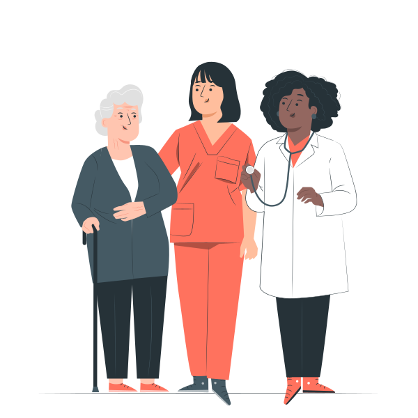
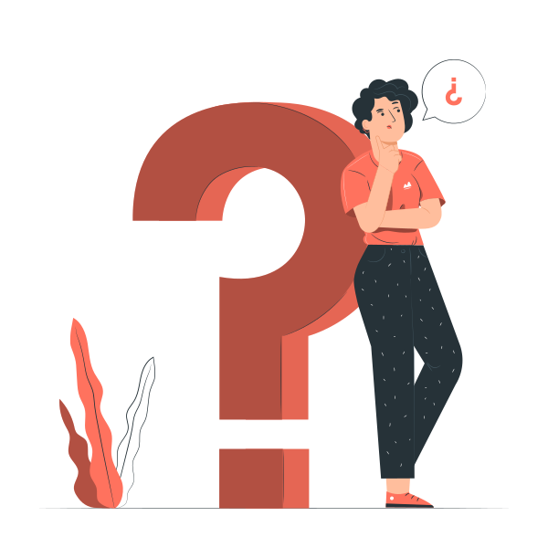
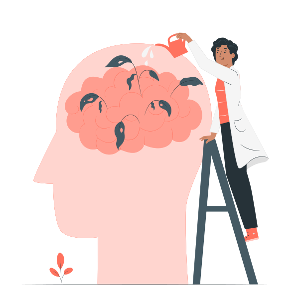
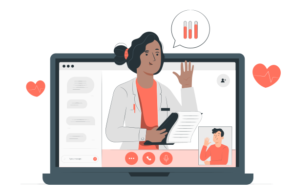
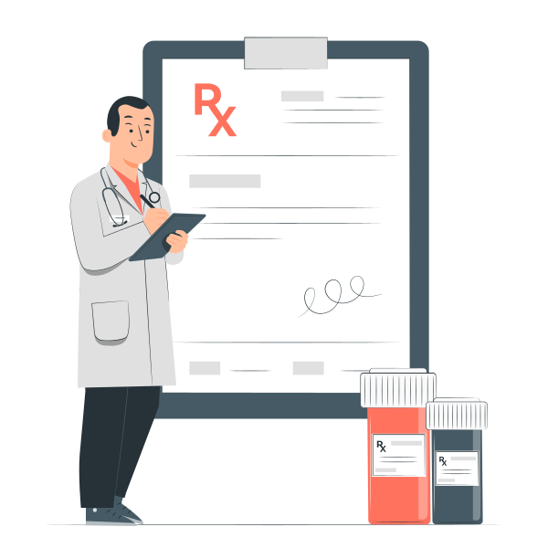
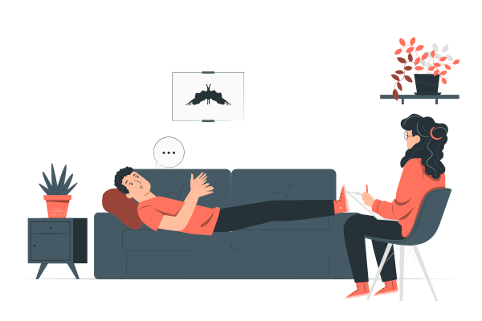
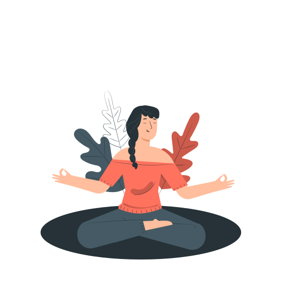
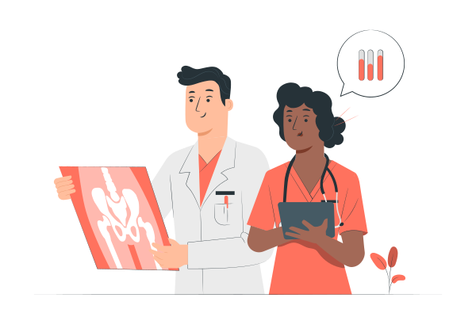

1
Informasi ada, tapi tidak dipahami
- 33% pasien bermasalah, 16,2% tak memadai.
- Materi kesehatan setara kelas 12,8 — terlalu berat untuk pembaca 9–11 tahun, yang jadi sasaran utama.
Informasi kesehatan yang rumit, jadi sederhana, dengan AI, dalam bahasa yang bisa dipahami semua orang.
Halaman ini adalah penjelasan — semua yang bisa diklik ada di aplikasinya.

Untuk semua lapisan — dari lansia, keluarga, sampai tenaga kesehatan.
Ilustrasi tampilan — bukan kotak yang bisa diketik.
Informasi kesehatan sebenarnya melimpah — masalahnya ada pada pemahaman, jangkauan, dan kepercayaan.

Akses informasi adalah variabel dengan dampak terbesar terhadap literasi kesehatan.
💡 Jadi, subtema “Meningkatkan aksesibilitas informasi kesehatan” memang tepat sasaran — problem-solution fit kuat, dan bisa dibuktikan dengan data, bukan sekadar klaim.
Aksesibilitas bukan hanya soal bisa dibaca. Ada 4 lapis yang harus dipenuhi, dan saat ini aplikasi yang ada baru menyentuh lapis pertama.

Bisa dibaca dan dimengerti
Bisa didengar, dalam bahasa sendiri
Tetap jalan tanpa sinyal bagus
Bisa dicek sumbernya, bukan hoaks
Enam langkah yang dilalui pengguna: pilih bahasa & tingkat baca, tentukan bantuan yang dibutuhkan, biar AI memproses, lalu pengguna memverifikasi sendiri.

Pengguna buka web — tanpa login, tanpa data pribadi.
Bahasa sehari-hari + tingkat Anak-anak / Remaja / Dewasa / Lansia.
1 Terjemahkan teks medis · 2 Cek klaim mencurigakan · 3 Cek tingkat pemahaman.
Cari di internet → ambil isi halaman teratas → rubric prompting: tandai poin kunci dulu, baru sederhanakan bahasanya.
Pengguna paham & bisa verifikasi sendiri.
Tingkat yang dipilih berlaku untuk semua jawaban AI.
Penjelasan tiap fitur: apa masukannya, apa yang dikerjakan AI, dan apa keluarannya.

Contoh masukannya:
“Hipertensi merupakan kondisi kronis yang ditandai dengan peningkatan tekanan darah arteri secara persisten di atas nilai ambang batas normal.”
Contoh keluarannya (tingkat Anak-anak):
“Tekanan darah tinggi artinya darah menekan dinding pembuluh darah terlalu kuat. Kalau dibiarkan, jantung jadi capek bekerja.”
Tingkat baca anak-anak ditujukan untuk pembaca 9–11 tahun; dewasa untuk 26–59 tahun.
ℹ️ Memakai rubric prompting, bukan prompt biasa: poin kunci dipertahankan lebih dulu, baru bahasa disederhanakan. Kelengkapan informasi jadi bisa dilihat, bukan cuma diklaim.
Alur: tekan mikrofon → pertanyaan dikenali → jawaban dibacakan.
Contoh jawaban: Demam berdarah (DBD) adalah infeksi yang dibawa nyamuk. Kalau demam tinggi lebih dari 3 hari, segera periksa ke fasilitas kesehatan.
🎙️ Status: pembacaan suara (TTS) sudah aktif — memakai mesin suara sistem lewat peramban. Pengenalan suara (STT) aktif di Chrome dan Edge; di Brave belum, karena Brave memblokir layanan suara daring.
📡 Status: sudah aktif. Menyalakan sakelarnya di Pengaturan menyimpan jawaban terakhir di perangkat, lalu ditampilkan kembali di Beranda saat sinyal hilang.
Contoh pertanyaan:
“Berapa kasus demam berdarah di Indonesia tahun 2025?”
Yang dilakukan sistem:
Contoh klaim yang diperiksa:
“Vaksin MMR menyebabkan autisme pada anak.”
Klaim ini tidak didukung bukti ilmiah. Penelitian yang memicunya sudah ditarik. Untuk keluhan pribadi, tetap tanyakan ke tenaga kesehatan.
🛡️ Mendukung transparansi penggunaan AI dan melawan hoaks kesehatan.
Ditulis apa adanya, supaya tidak ada klaim yang berlebihan.
Dasbor desktop untuk membaca lebih lega, aplikasi mobile untuk bertanya dengan suara.
Ada yang bisa kami bantu?
Demam itu saat badan jadi lebih panas dari biasanya — tanda tubuh sedang melawan kuman. Suhu normal sekitar 36,5–37,5 °C. Kalau lebih dari 38 °C, itu demam.
Tekan untuk bicara atau tanya dengan suara.
Tekanan darah normal umumnya di bawah 120/80 mmHg. Di atas 140/90 mmHg sudah masuk tekanan darah tinggi.
Tampilan di atas adalah ilustrasi produk. Yang bisa dicoba ada di aplikasinya.
Kuesioner singkat berbasis instrumen HLS-SF12 — instrumen yang sudah tervalidasi (α 0,899). Hasilnya langsung tampil, tanpa data yang disimpan.

📊 Seluruh perhitungan berjalan lokal di peramban — tidak ada data pribadi yang dikirim atau disimpan.
Di aplikasi, tiap pernyataan dijawab dengan skala: Sangat sulit · Kadang sulit · Mudah · Sangat mudah.
Contoh tampilan hasil. Kuesionernya sendiri bisa dicoba di aplikasi, menu Kuesioner.

Dari informasi yang rumit, jadi jelas. Dari yang sulit diakses, jadi dekat dengan semua orang.
— Pahami Sehat
Lima pilar yang menjadi dasar penilaian, beserta bobotnya.

Data sekunder resmi (SKI 2023, Komdigi, riset peer-reviewed).
AI di 4 tempat dengan alasan jelas. Rubric prompting, penyertaan sumber, indikator keterbacaan terukur.
Arsitektur rapi, dokumentasi jelas, repo GitHub bersih, README & cara menjalankan.
Demo video 3–5 menit (tanpa suara). Aksesibilitas visual (kontras, ukuran huruf, tombol besar) = nilai ganda.
Efisiensi sumber daya, privasi data (tidak menyimpan data pribadi), transparansi AI (setiap jawaban bersumber).